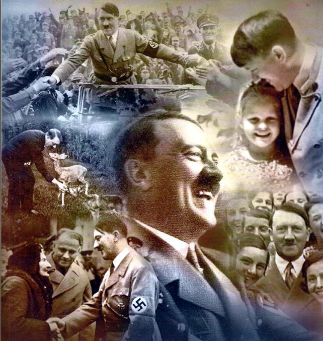

Всеки е чувал историите за "злия Хитлер", "лудия фюрер", който "искал превземе света" и "да избие всички негерманци". Но това е историята, която неговите врагове разказват. Ами ако това не е истината? Ами ако истината е точно обратното? Ако Адолф Хитлер е човекът, изправил се срещу злите сили, които го очернят по всякакъв начин и го представят на света като най-лошия човек, живял някога? Тук е мястото, където ще научите цялата истина за Адолф Хитлер и неговата борба. Но знайте, че след като научите истинската история, животът ви няма да бъде същия!
"И ще научите истината, и истината ще ви направи свободни!"
